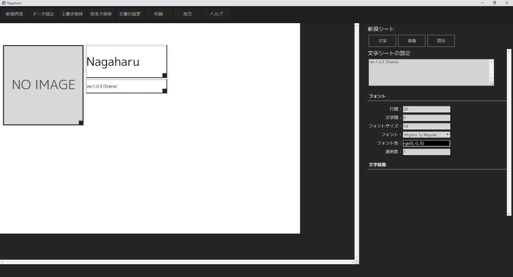

最新情報
・Nagaharu 1.0 Beta2を公開しました。(2016/8/18)
NEW!
・Nagaharu 1.0 Beta1を公開しました。(2016/7/30)
ダウンロード
動作環境：Windows 7/8/8.1/10
Ver.1.0 Beta 2 (2016-08-18) -
ダウンロード(Google Drive、51MB)
ドキュメント
準備中です。公開までしばらくお待ち下さい。
Nagaharuとは？

Nagaharuは、ポスターやお知らせ文書等、「1ページでシンプルな文書」の制作に適した
簡単編集ソフトウェアです。node-webkitで作られています。
特徴
・マウスで視覚的にパーツを編集できます
・文字のサイズ変更、色の設定、縦書きなど様々な機能を備えています
・画像を読み込み、自由に拡大縮小ができます
・ゴシック2種、明朝1種のフォントがソフトウェアに内蔵されており、Nagaharu同士なら再現度は100%です
・インストールが必要無いので、USBメモリで持ち運べます。
ライセンス
NagaharuはMITライセンスで提供しています。
個人・法人問わず自由に使え、改良した新しいソフトウェアの制作も自由ですが、
著作権表示および許諾表示をソフトウェアのすべての複製または重要な部分に記載する必要があります。
また、同梱されているフォントに付きましては、各配布条件に従って下さい。
ソースコード：
GitHub
同梱フォント (M+ﾌｫﾝﾄ)のライセンス：
こちら
同梱フォント (IPAﾌｫﾝﾄ)のライセンス：
こちら
(c)2016 Sora Arakawa all rights reserved.
Website -
Twitter (Author)